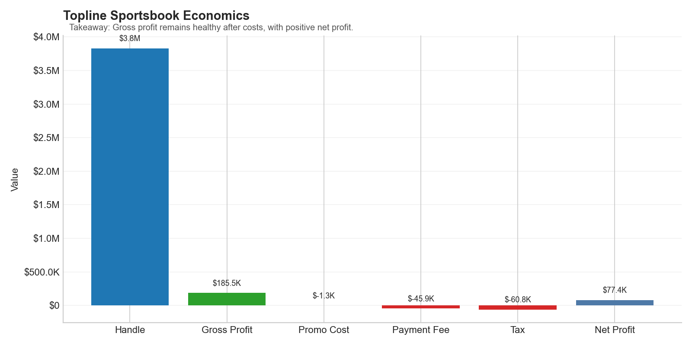
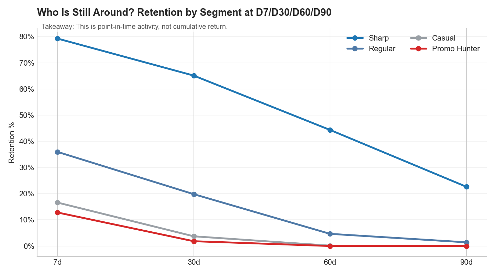
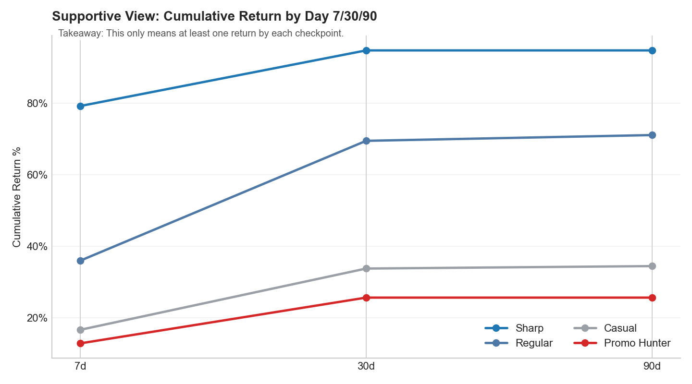
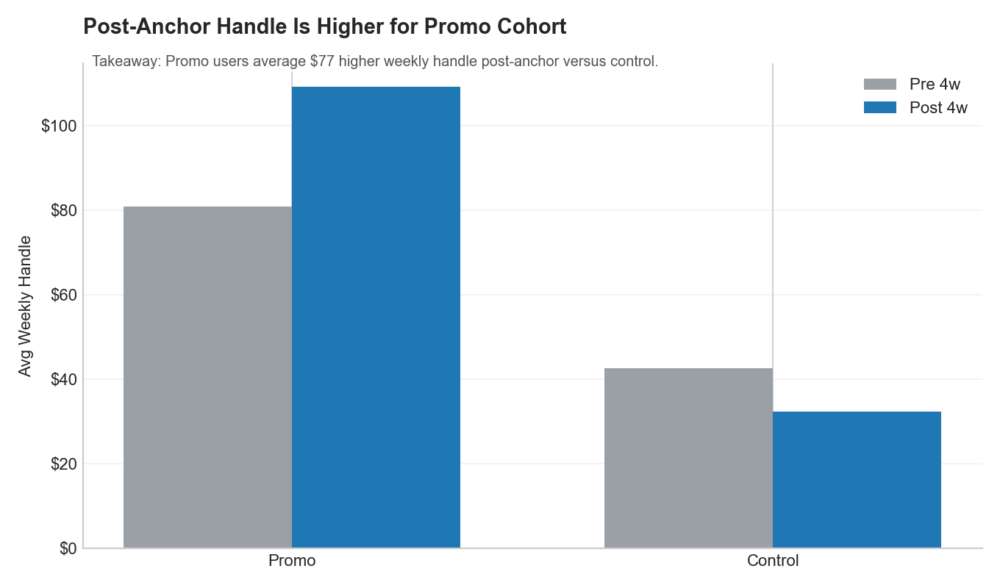
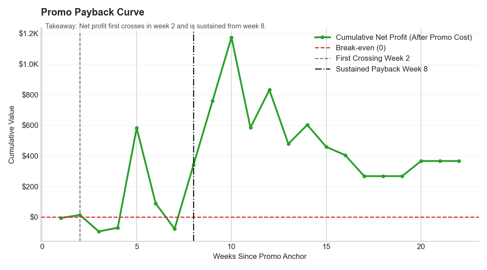

Sportsbook Analysis
Artifacts
Project highlights
- SQL model with dimensions and facts for sportsbook economics.
- Behavior-based churn simulation with segment-level hazard logic.
- Promo offer framework with 4/13/26-week net profit, cost efficiency, and payback tracking.
What I was curious about
Sportsbooks look simple from the outside: people place bets, the book pays winners, and keeps the rest. But once you zoom in, profit can swing hard week to week. I wanted to understand what really drives those swings, and whether promotions such as bonus bets bring in valuable users over time or just add cost over time.
What I did
I used real NFL game outcomes and built a simulation of a betting ledger on top of them, so every simulated bet still settles against real game results. I set up a simple warehouse-style model (teams and events as dimensions, bets and costs as facts), then simulated different customer types, betting behavior, payouts, and promo usage. From there, I used SQL to calculate handle, gross profit, net profit, hold, and margin, and broke those down by market, time, and customer segment.
What I found
Profit is concentrated. A small share of markets and user groups explains most of the upside and most of the downside. Promotions can look misleading if you only read one metric, so I used a simple scorecard: post-period net profit, promo cost, ROI at 4/13/26 weeks, and a cumulative payback curve.
Why it matters
This is the type of work I want to do day to day: connect user activity to P&L, explain what changed in plain English, and evaluate promos as an investment rather than a guess. The customer behavior is synthetic, so this is not claiming a real-world causal result. The point is to show how I structure the problem, build the analysis, and turn it into decisions.
Headline KPIs
- Handle: $3.83M
- Gross Profit: $185K
- Net Profit: $77K
- Hold: 4.84%
- Margin: 2.02%
- Promo net per user: -$2 -> $19 -> $28 (4w/13w/26w)
Chart preview
Retention and promo economics outputs generated from the synthetic ledger.
Topline sportsbook economics
This snapshot summarizes handle, gross profit, key costs, and net profit so the P&L story is clear before cohort analysis.
Main retention view (who is still around)
This is the primary retention chart. It shows the share of each segment still active at day 7, day 30, day 60, and day 90.
Supportive view: cumulative return by day 7/30/90
Cumulative return % means the share of users who came back at least once by that checkpoint, not users active exactly on that day.
Promo economics
Promo-tagged bets can be lower margin in isolation, while promo-exposed users can still become profitable over time through repeat non-promo activity.
Promo spend is intentionally conservative in this base run. In higher-budget scenarios, we expect weaker near-term ROI and later payback, with the potential for stronger long-term retention and revenue if targeting quality remains high.
The payback curve tracks cumulative net profit after promo costs by week since first promo exposure. In this run, the curve crosses break-even early and then stays positive at a slower slope, showing payback with more gradual long-tail gains.
Limitations
Customer and churn behavior are simulated, so outputs depend on model assumptions. In production, I would calibrate this against real event data and measure promo impact with randomized holdouts. I include this on purpose because good analysis should be clear about uncertainty.